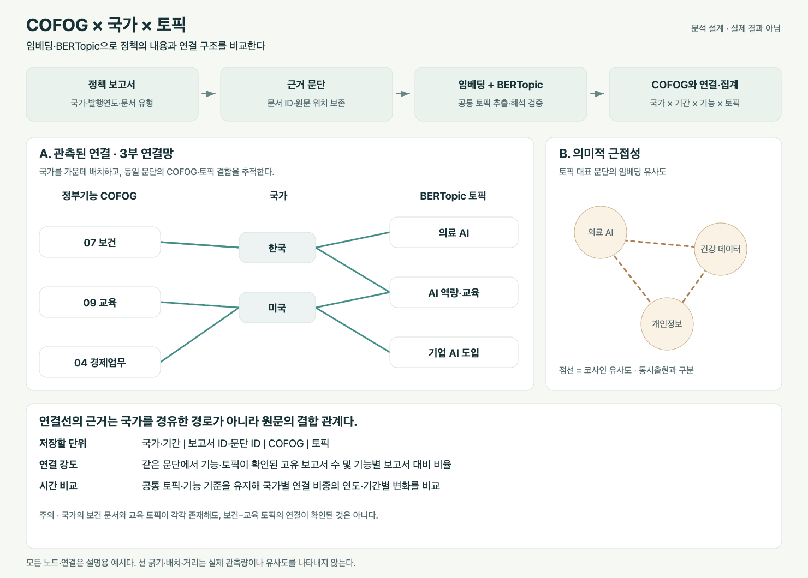

정부기능과 AI 정책
정부가 수행하는 기능을 공통 기준으로 구분하고, 각 기능에서 AI 정책이 무엇을 하려는지 살펴본다. (We classify government functions using a common framework and examine what AI policy seeks to achieve within each function.)
정부기능
정부기능의 정의
이 연구에서 정부기능은 정부 활동이 달성하려는 사회·경제적 목적을 뜻한다. (In this study, government functions refer to the socioeconomic objectives that government activities seek to achieve.) COFOG는 정부지출을 이러한 목적에 따라 구분하는 국제 분류체계다. 기관 이름이나 사용 기술보다 ‘어떤 공적 목적을 수행하는가’ (‘What public purpose does the activity serve?’)를 기준으로 본다.
정부기능의 분류 기준
- 목적과 실제 활동을 함께 확인한다. (Examine both the purpose and the activities actually carried out.)
- 공통 비교는 10개 대분류로 맞춘다. (Use the ten COFOG divisions as the common level of comparison.)
- 복합 기능은 근거 단위로 나눈다. (Separate mixed functions into units grounded in textual evidence.)
- 기능과 목적·수단을 별도로 기록한다. (Record functions, objectives and policy instruments separately.)
정부기능의 분류 결과 · COFOG 10개 대분류
COFOG 1999의 10개 대분류
COFOG 1999의 공식 10개 대분류다. AI 정책 자료의 기능별 분석 결과는 분류·검토 후 제시한다.
| 코드 | 정부기능 | 영문 명칭 | 활동 예시 |
|---|---|---|---|
| 01 | 일반 공공행정 | General public services | 정부 운영·재정·대외 업무 등 |
| 02 | 국방 | Defence | 군사·민방위 등 |
| 03 | 공공질서 및 안전 | Public order and safety | 경찰·소방·법원·교정 등 |
| 04 | 경제업무 | Economic affairs | 산업·농업·에너지·교통 등 |
| 05 | 환경보호 | Environmental protection | 폐기물·오염·생물다양성 등 |
| 06 | 주택 및 지역사회 편의시설 | Housing and community amenities | 주택개발·지역사회 개발·상수도 등 |
| 07 | 보건 | Health | 의료서비스·공중보건 등 |
| 08 | 휴양·문화·종교 | Recreation, culture and religion | 체육·문화·방송·종교 등 |
| 09 | 교육 | Education | 교육 단계별 서비스·교육 지원 등 |
| 10 | 사회보호 | Social protection | 질병·장애·노령·실업·주거 지원 등 |
AI 정책의 정의
이 연구에서 AI 정책은 AI의 개발·도입·활용·거버넌스를 촉진하거나 그 위험과 사회적 영향을 다루는 정부의 전략·지원·조달·규제 등 공적 개입이다. AI 정책 문서에는 이를 설명·평가·제안하는 보고서도 포함하되, 정부의 공식 정책과 비정부기관의 권고를 구분한다.
AI 정책의 실제 예시 · 한국 / 미국 / 유럽연합
공식 원문에 명시된 정책 조치의 예시다. 아래 기능 연결은 인용한 조치에 대한 연구상 해석이며, 문서 전체의 확정 분류나 집행 성과를 뜻하지 않는다.
| 지역·정책 | 공식 원문 인용 | 정책 내용과 정부기능 연결 |
|---|---|---|
| 한국 · 디지털 기반 교육혁신 방안 교육부 · 2023. 2. 23. 발표 | 교사(사람)와 AI보조교사(디지털교과서)가 협력하여 학생 맞춤 수업 제공 | 교육 (Education), COFOG 09 학생 맞춤 교육을 위해 AI 디지털교과서 도입과 교사 지원을 추진하는 정책이다. 인용문은 발표 당시 계획의 내용이다. |
| 미국 · 청소년 AI 교육 증진 행정명령 Advancing Artificial Intelligence Education for American Youth 행정명령 14277 · 2025. 4. 23. | prioritize the use of AI in discretionary grant programs for teacher training번역 · 교사 연수 재량 보조금 사업에서 AI 활용을 우선시한다. | 교육 (Education), COFOG 09 교육부 장관에게 120일 이내 교사 연수 지원 사업에서 AI 활용을 우선하도록 조치할 것을 지시한다. 정책 수단은 행정명령과 보조금 우선순위다. |
| 유럽연합 · AI 대륙 행동계획 AI Continent Action Plan 유럽위원회 · 2025. 4. 9. 발표 | They will support EU AI startups, industry and researchers in developing AI models and applications.번역 · AI 팩토리는 EU의 AI 스타트업·산업계·연구자의 AI 모델 및 응용 개발을 지원한다. | 경제업무 (Economic affairs), COFOG 04 공공 컴퓨팅 인프라인 AI 팩토리를 통해 기업의 AI 개발을 지원하는 산업 지원 조치로 읽는다. 연구 지원 등 다른 조치는 근거를 나눠 별도로 분류한다. |
이 연구가 답할 질문
국가·시기별 AI 정책은 어떤 정부기능에 초점을 두며, 그 안에서 논의되는 의제와 정책적 접근은 어떻게 달라지는가? (Which government functions do AI policies focus on across countries and over time, and how do the agendas and policy approaches within those functions vary?)
분포
어느 기능을 얼마나 다루는가?
내용
같은 기능에서 어떤 토픽과 목적·수단이 나타나는가?
차이와 변화
출처와 문서 유형 차이를 고려해도 국가·시기별 차이가 유지되는가?
기여의 중심은 비교 가능한 보고서 자료와 검증된 기능·내용 연결이다. 관측된 차이는 정책 사례·국가 여건과 함께 해석해 국가별 제안의 근거로 삼는다.
COFOG를 공통축으로 규모와 내용을 연결한다
보고서 규모·분포 + 토픽·정책 목적·수단 + 문서 유형
세부 의제는 BERTopic으로 추출하고, COFOG를 기준으로 연결·비교한다.
보고서에는 국가·발행연도·발행기관·언어·문서 유형을, 근거 문단·정책 조치에는 COFOG와 목적·수단을 기록한다. 원문 위치를 보존해 보고서 단위로 연결한다.
| 분석 차원 | 측정할 내용 | 주요 결과 |
|---|---|---|
| 논의 규모 | 고유 보고서 수와 기능별 문서 포함률 | COFOG별 분포·국가 비교 |
| 정책 내용 | 기능 내부 토픽과 명시 목적·수단 | COFOG × 토픽, COFOG × 목적·수단 |
| 문서 유형 | 전략·계획 / 법령·규제 / 사업 지침 / 현황·평가 / 제안·권고 | 유형별 구성과 같은 유형끼리의 비교 |
COFOG는 복수 기능을 허용하며 근거가 부족하면 미분류로 남긴다. 횡단적 AI 정책을 일반 공공행정에 일괄 배정하거나 토픽 하나를 기능 하나로 강제 연결하지 않는다.
핵심 집계 기준
- 기능별 포함률은 해당 기능을 다루는 고유 보고서 수를 같은 국가·기간의 전체 분석 보고서 수로 나눈다. 보고서는 기능마다 한 번씩 집계하며 포함률 합은 100%를 넘을 수 있다.
- 토픽 비중은 해당 기능에 연결된 문단 중 각 BERTopic 토픽에 속한 문단의 비율을 보고서별로 구한 뒤 동등 가중 평균한다. 미할당 문단도 분모에 남기고 별도 표시한다. 이는 문서 포함률이나 STM의 기대 토픽 비중과 다른 지표다.
- 목적·수단은 해당 기능 보고서 중 각 항목을 명시한 보고서의 비율로 비교한다. 원문 조치 수와 보고서 수를 혼합하지 않는다.
- 전체 국가·기간의 분석 문단에 공통 BERTopic 모형을 학습하고 COFOG 분류와 독립적으로 연결한다. 토픽 하나가 여러 기능에 나타날 수 있으며 국가·연도마다 별도 모형을 학습하지 않는다.
비교 가능한 AI 정책 보고서 표본을 확정한다
본문·발행일·국가·출처가 확인되는 AI 정책 보고서를 분석한다. 공식 정부 문서를 주 분석으로 삼고, 외부 기관의 평가·권고는 별도로 비교한다. 현재 후보 자료는 최종 분석 표본이 아니다.
현재 후보 자료 · 최종 보고서 표본과 구분
기존 입력 후보 116,992건에는 문서·사건·이니셔티브·유형 미기재 기록이 혼재한다. 본문 확보율과 국가·연도·문서 유형을 확인한 뒤 분석 대상과 기간을 확정한다. 후보 기록 수를 정책 보고서 수로 해석하지 않는다.
보조 자료 · 정부기능별 재정지출 그래프
국가 여건을 해석하는 보조 자료다. 기능 전체 지출은 AI 예산이나 정책 적정성의 기준이 아니다. OECD 자료의 37개국·2000~2025년 중 관측 가능한 연도를 수록하며 한국은 2023년까지다.
선택한 그래프의 수치 표
| 항목 | 전체 지출 대비 (%) | 지출액 (백만 자국통화) | 통화 | 자료 상태 |
|---|
국가 간 비교는 전체 지출 대비 비중을 사용한다. 금액은 각 국가의 명목 지출액이다. 관측값이 없는 항목은 0으로 표시하지 않는다.
재정 데이터 CSV · 출처 OECD · 2026년 11월 7일 조회
분류·토픽·비교를 원문 근거와 검증으로 연결한다

| 분석 단계 | 핵심 절차 |
|---|---|
| 1 · 비교 코퍼스 확정 | 발행·적용 국가와 EU·다국가 문서를 구분하고, 번역·재게시 중복을 제거한다. 개정판은 문서 계열로 연결한다. 출처·언어·본문 확보 현황을 확인해 비교국·기간과 문서 유형 기준을 정한다. |
| 2 · 기능·내용 연결과 검증 | 문단·조치에 COFOG와 목적·수단을 연결한다. 국가·기간·기능별 표본을 두 사람이 독립 코딩하고 자동 분류와 대조한다. 기능별 정밀도·재현율, 분류자 간 일치도와 불일치 사례를 확인한다. |
| 3 · BERTopic으로 공통 토픽 추출 | 다국어 의미 비교를 검증한 임베딩으로 문단을 표현하고, 차원 축소·군집화·c-TF-IDF를 통해 공통 토픽을 추출한다. 대표 문단으로 토픽을 해석한 뒤 COFOG별로 교차 집계한다. 언어별 해석, 군집 설정·난수 변경과 미할당 비율에 따른 결과의 안정성을 확인한다. |
| 4 · 국가·기간별 비교 | 기능별 문서 수·포함률, COFOG × BERTopic 토픽, 문서 유형 및 목적·수단 구성을 비교한다. 공통 토픽의 국가 간 차이와 연도·기간별 변화량을 제시하고, 문서가 희소한 연도는 사전에 정한 다년 기간으로 묶는다. |
| 5 · 안정성 확인과 정책 해석 | 공식 문서 한정, 출처·유형 구성 고정, 기간 구분과 문서 계열 가중치를 바꾼 분석에서도 주요 양상이 유지되는지 확인한다. 대표 정책 원문과 국가 여건을 검토해 국가별 제안으로 연결한다. |
예상 결과는 기능별 분포, 기능 내부 내용 구성, 국가·시기별 변화의 세 가지다. 막대·누적 막대와 연도별 추세로 제시하며, 문서 수와 분모를 함께 표시한다.
분석 대상은 문서에 나타난 관심과 정책 설계다. 실제 도입률·집행 성과·인과효과를 측정하지 않으며, 발행연도를 정책 시행연도로 간주하지 않는다. 관측되지 않은 문서와 국가별 공개 관행의 차이는 남을 수 있다.
보조 분석 · 데이터가 충분한 경우
정책 대상·시행 상태는 근거가 확인되는 개별 조치에서 추가한다. 재정 자료는 국가 여건을 설명하는 데 활용한다. 본문이나 언어 비교 가능성이 부족하면 토픽 비교 범위를 축소하고, 모형 결과를 확정적인 의제로 제시하지 않는다.